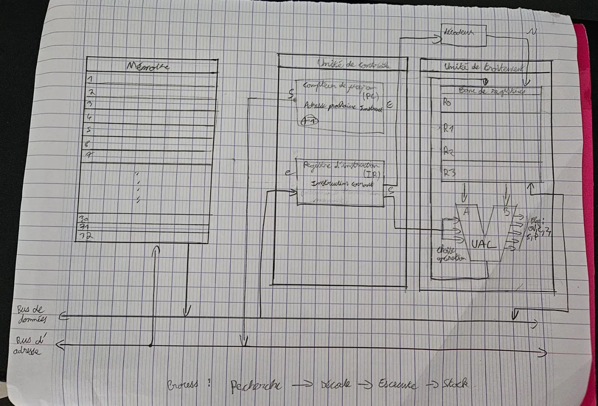

Kyllian Siewe Tiague
Cybersecurity student at ESILV
I build systems end to end: the web application, the API behind it,
and the hardware it talks to. What interests me is the whole chain,
from the browser down to the sensor, and how to secure it.
View my projects
Get in touch
Current availability
Looking for a technical internship and an apprenticeship in
cybersecurity, with an interest in DevSecOps and network
administration. Based in Île-de-France.
What I work on
Web and backend
Symfony applications, REST APIs, relational databases.
Server-side validation, authentication, access control.
Systems and networks
Linux administration, TCP/IP, traffic analysis, virtual machines.
Low-level understanding of how a program actually runs.
Embedded and IoT
Arduino and ESP32, sensors, embedded C++.
Connecting physical hardware to a web platform over HTTP.
Featured work

Technical lead
A connected smart parking system. A Symfony platform handles
reservations and generates QR codes; an Arduino and ESP32-CAM
read them at the barrier and report space occupancy back over a
REST API. Built as a working physical prototype within a
150 € hardware budget.
- Symfony
- REST API
- MySQL
- Arduino
- C++

Sole developer
A commercial website for a cleaning company, rewritten from a
static HTML site into a Symfony application. The service catalog
lives in the database, so the grid and the quote form always stay
in sync. Two server-validated forms send SMTP notifications.
- Symfony 8.1
- Twig
- Stimulus
- MySQL
- SEO

Pipeline implementation
A processor simulator written in C, running a 4-stage pipeline
cycle by cycle. I implemented the pipeline layer: inter-stage
registers, structural and data hazard detection, and the
forwarding mechanism that resolves dependencies between
consecutive instructions.
- C
- Computer architecture
- Pipelining
See all projects
Skills
Working with
- C
- Python
- PHP and Symfony
- SQL and MySQL
- Linux
- Networking
- HTML and CSS
- Git
Building experience in
- JavaScript
- Docker
- CI/CD
- Arduino and ESP32
- Wireshark
- Kali Linux
Currently exploring
- AWS and Azure
- Infrastructure as Code
- SIEM and log analysis
- AI applied to security
Read the full breakdown